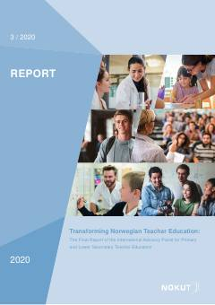

TNNorvegiya o'qituvchilar ta'limi tizimini rivojlantirish bo'yicha xalqaro ekspertlar hisoboti.
Ushbu hisobot Norvegiya o'qituvchilar ta'limi tizimini baholash va rivojlantirish bo'yicha xalqaro maslahat kengashining yakuniy xulosalarini o'z ichiga oladi. Hujjatda ta'lim sifatini oshirish, o'qituvchilarning kasbiy rivojlanishi va tizimli islohotlar bo'yicha tavsiyalar keltirilgan.